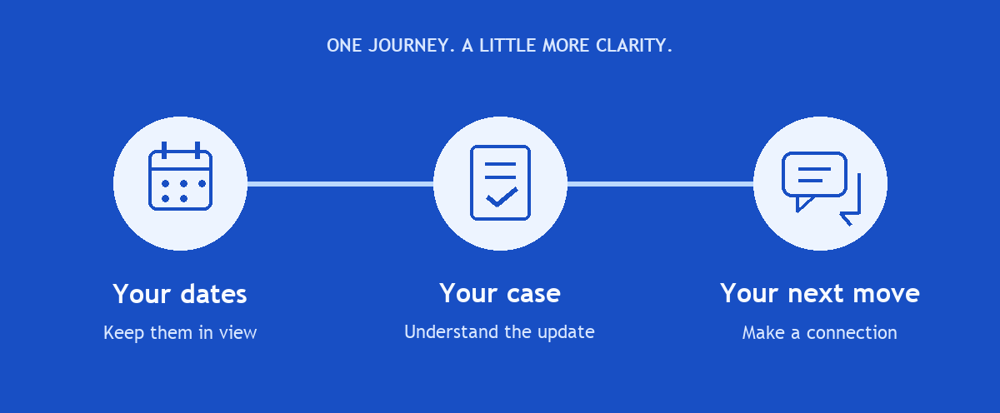

|
TrackMyOPT |
A note from Karthik
September 29, 2026 |
|
|
Hey there,
Karthik here from TrackMyOPT. Thanks for signing up.
Over the past couple of weeks, we’ve been improving your OPT tools and job-search workflow. The updated Chrome extension, smoother resume builder, networking tools, and clearer case view are ready to use.
If you haven’t had a chance to explore yet, here’s a quick tour of what’s waiting in your account.
|
|

|
Here’s what you can do today
Chrome extension
Prefill supported job applications, draft screening answers and cover letters, and reuse job-specific resumes. You review and submit. |
Resumes & ATS checks
Tailor your resume to a job, check its ATS compatibility, and keep your saved versions. |
Jobs & H-1B sponsors
Browse roles, research sponsoring employers, and track your applications in one place. |
OPT & STEM planning
Calculate filing windows, count unemployment days, save employment history, and plan your STEM extension. |
Case updates & reminders
Check USCIS status, organize notices and tasks, and add deadlines to your calendar. Pro adds scheduled checks, opt-in alerts, and weekly digests. |
Networking
Find available work emails from LinkedIn profiles and draft personal outreach messages for you to review and send. |
Document Vault · Pro
Keep your I-20, EAD, passport, and other files together, with document expiry reminders. |
Everyday resources
Explore health insurance options, tax-filing resources, and partner offers. |
Features and usage limits depend on your plan. Contact lookups depend on available data.
Get the Chrome extension →
|
|
You don’t need to set up everything at once. Start with the one thing you need help with today.
Try Pro for $0.99 for 7 days.
Use your existing account to try automated case checks, deadline alerts, Document Vault, and more capacity for your career tools.
$0.99 is charged today for 7 days. Then Pro automatically renews at $4.99/month or $49.99/year, depending on your chosen plan, unless you cancel before the introductory period ends. Once per eligible account; checkout shows your exact terms.
|
Want to start with Free? Open my dashboard →
What’s one thing you’re stuck on this week? Tell me here.
Thanks for giving us a try,
Karthik
TrackMyOPT
|
|
TrackMyOPT is independent of USCIS and government agencies. Verify important dates with your official notices and DSO.
You’re receiving this because you signed up for TrackMyOPT and receive product emails. We measure opens and link clicks to improve these updates. You can unsubscribe below.
© 2026 Zyene, Inc. · TrackMyOPT
[Verified sender postal address to be added]
Unsubscribe from product updates · Privacy
|
|